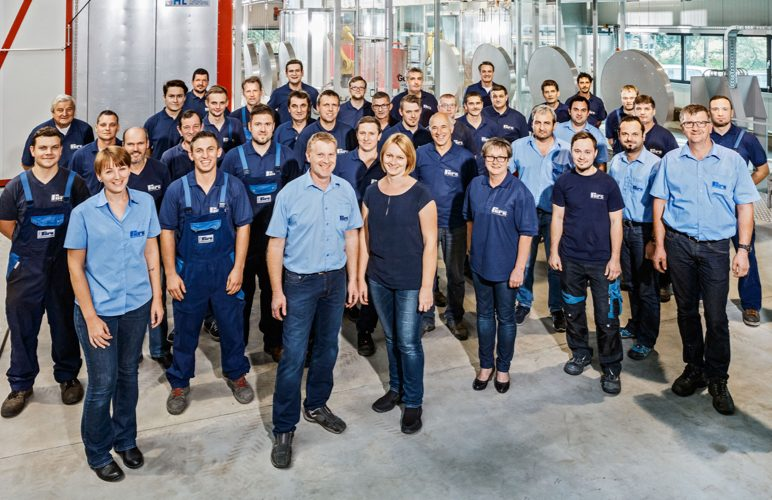

Lasertechnik
Bedienung und Programmierung der Laserschneideanlage samt Rohrlaser und – seit der Investition 2023 – des automatisierten Blechlagersystems mit ERP-Anbindung.
Start · Karriere
Karriere
Ohne motivierte und bestausgebildete Mitarbeiter ist auch die modernste Technik nur halb so viel wert. Genau deshalb suchen wir Menschen, die Freude an Präzision haben – und bieten ihnen ein Umfeld, das laufend investiert.
Hinweis zur Vorschau: Die bestehende Website des Betriebs führt keine Karriereseite. Diese Seite zeigt, wie eine Bewerbungsstrecke aussehen könnte – die genannten Tätigkeitsfelder entsprechen den real im Betrieb vorhandenen Bereichen. Konkrete offene Stellen, Gehälter und Eintrittstermine trägt der Betrieb im Live-Betrieb selbst ein.
Tätigkeitsfelder
Unser Betrieb deckt die gesamte Wertschöpfung ab: vom Zuschnitt über die Umformung und das Schweißen bis zur Oberfläche. Entsprechend breit sind die Berufsbilder im Haus.
Bedienung und Programmierung der Laserschneideanlage samt Rohrlaser und – seit der Investition 2023 – des automatisierten Blechlagersystems mit ERP-Anbindung.
Arbeit an CNC-gesteuerten Abkantpressen mit 300 bis 1500 kN Presskraft, inklusive mehrfacher Folgebüge.
Geprüftes Schweißen nach EN ISO 9606-2 und ÖNORM EN 287-1:2004 – mit zweijährlichen Qualifizierungsmaßnahmen im Haus.
Biegearbeiten an Stahl-, Aluminium- und Edelstahlprofilen, auch unsymmetrisch und mit kleinsten Radien.
Vorbehandlung, robotergesteuerte Pulverbeschichtung und Eloxal – ein Bereich, der laufend wächst.
Fertigungsplanung, Dokumentation und Qualitätsmanagement nach EN ISO 9001:2015 und EN 1090.
Warum Ferk

Bewerbung
Schreiben Sie uns, in welchem Bereich Sie arbeiten möchten. Zeugnisse, Prüfungsbescheinigungen und Lebenslauf können auch später nachgereicht werden.